Luyarnha
Una città antica e devota, chiusa dentro le sue mura da una quarantena.
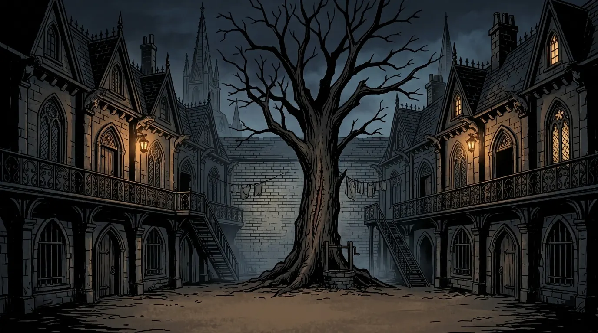
Benvenuti, reclute.
Cenere e Tiglio è una one-shot autoconclusiva ambientata a Luyarnha, la città in quarantena di Steinhardt's Guide to the Eldritch Hunt. Si gioca in una sola sessione e non richiede di conoscere né l'ambientazione né il manuale.
È anche una serata di prova. Sto preparando la campagna Rise of the Wretched e questa one-shot serve a voi per capire se il tono e le regole vi piacciono, e a me per capire come organizzare il tavolo.
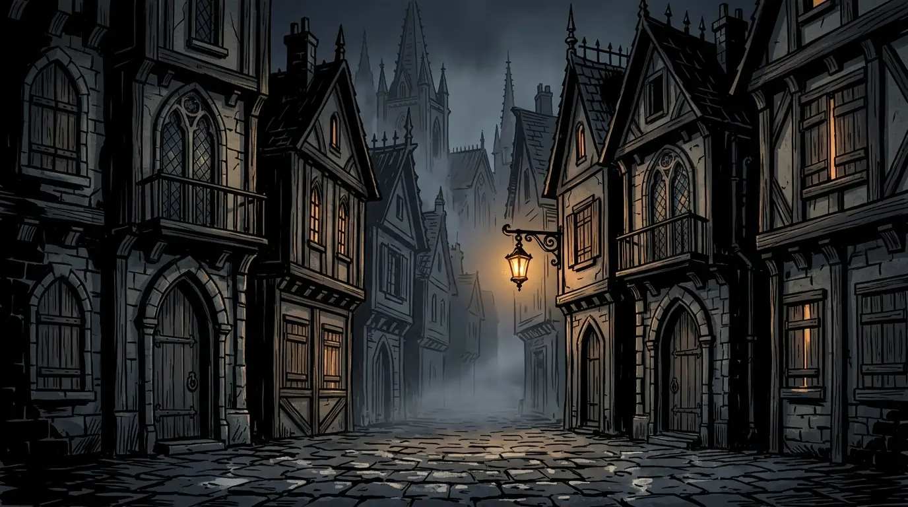
Siete una pattuglia di reclute della Milizia. Stanotte avete un incarico semplice: scortare una cassa di incenso consacrato fino alla Corte del Tiglio, un vecchio complesso di ringhiera sul ciglio del Distretto Rubino, a ridosso del cordone che lo sigilla, e presidiarlo fino all'alba.
Nelle ultime due notti, in quella corte, due famiglie sono state sbranate in casa propria, pur avendo entrambe acceso l'incenso per tenere alla larga le bestie della Piaga.
Una città antica e devota, chiusa dentro le sue mura da una quarantena.
Una maledizione che trasforma le persone in bestie. Di notte le strade sono loro. Nessuno sa come si prende: c'è chi dice il morso, chi l'aria, chi la luna. Non tutti finiscono bestie: alcuni cambiano corpo e restano sé stessi.
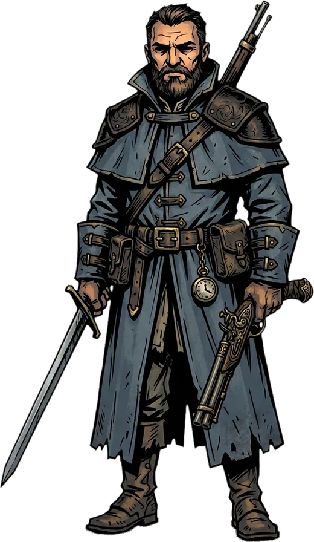
Voi. Cacciatori di mostri e guardie cittadine allo stesso tempo, agli ordini del sergente Alaric Ogden. Chi si arruola firma per tre anni; chi sopravvive al primo guadagna alla propria famiglia il diritto di vivere nel sicuro Distretto della Grande Cattedrale.
I bastoncini consacrati dalla Chiesa emanano un odore che gli uomini quasi non sentono e che le bestie della Piaga trovano insopportabile.
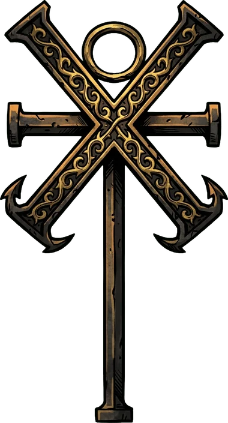
Governa la città, consacra l'incenso, detta la legge. Chi comincia a cambiare va consegnato alla Milizia, che lo tiene in cella finché non si vede cosa ne esce.
Parte degli abitanti del Distretto Rubino, il primo a essere colpito dalla Piaga e il primo a essere stato segregato.
Scienziati senza fede. Hanno dato alla città l'elettricità e i manichini, servitori d'avorio e d'oro che la Chiesa guarda con sospetto.
Quattordici membri della pattuglia, uno per classe. Sceglietene uno e scrivetemi su WhatsApp una riga sul perché vi ha incuriosito. In caso di doppioni vale chi scrive prima.
Alcuni sono più , altri hanno : toccate le due definizioni per vederli. Toccate un personaggio per aprirne la scheda.
Chi ha esperienza può modificare il proprio personaggio: punteggi con il point buy e qualunque opzione del Compendio della campagna, la webapp con le regole di Rise of the Wretched. Per entrarci serve un'autorizzazione: insieme alla scelta del personaggio, mandatemi l'email con cui volete accedere.
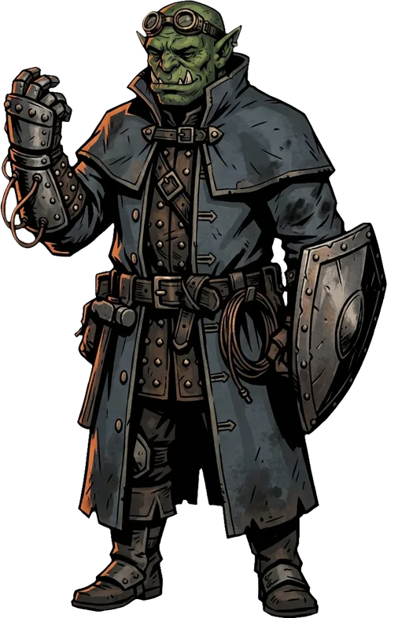
Artefice, orco
Meccanico cresciuto nelle officine delle miniere. Rimette in funzione ciò che si rompe
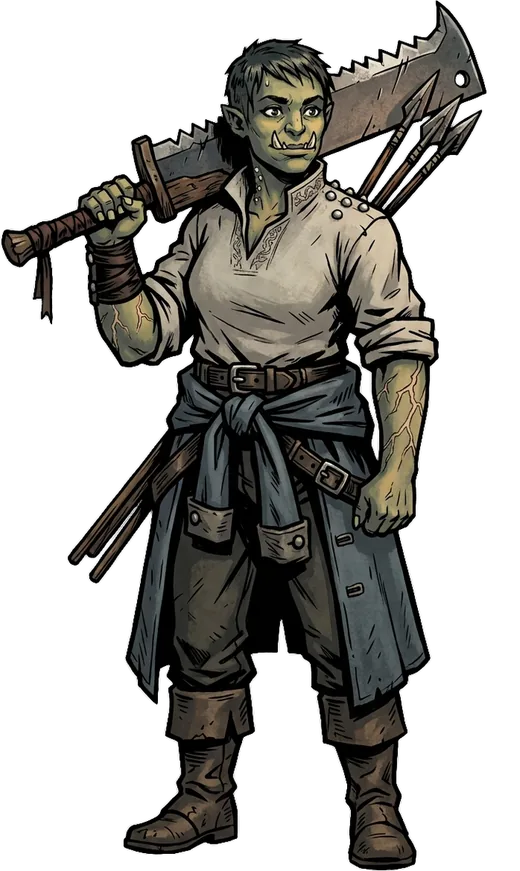
Barbaro, orca
Trovata un mese fa davanti al cordone, senza memoria e senza nome
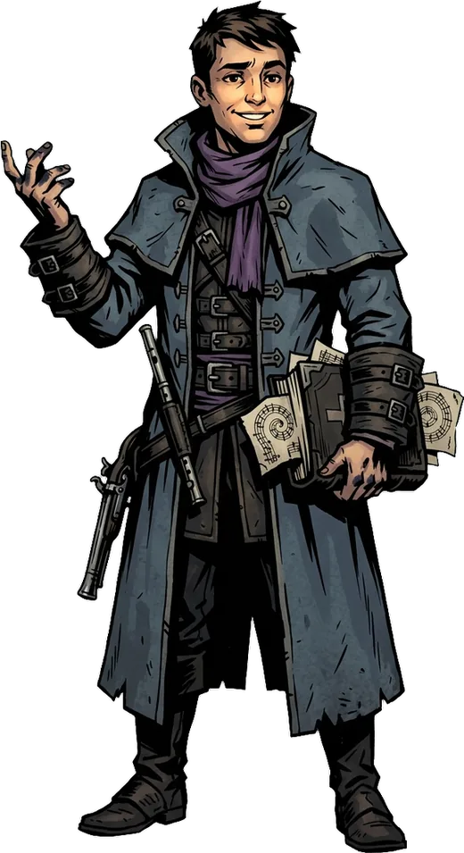
Bardo, umano
Ex voce del coro della Cattedrale, scrivano, uno che si fa raccontare le cose
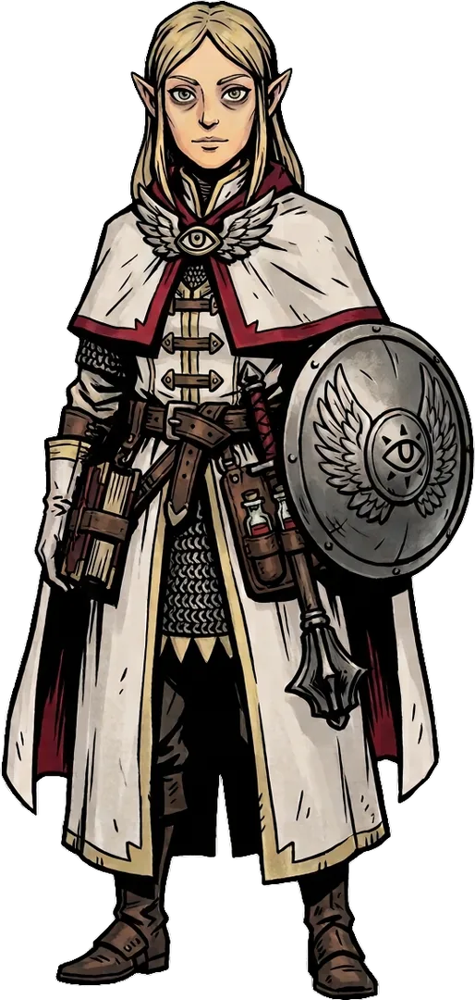
Chierico, elfa
Guaritrice di pattuglia, con la mantellina bianca. Crede nella Chiesa Radiosa
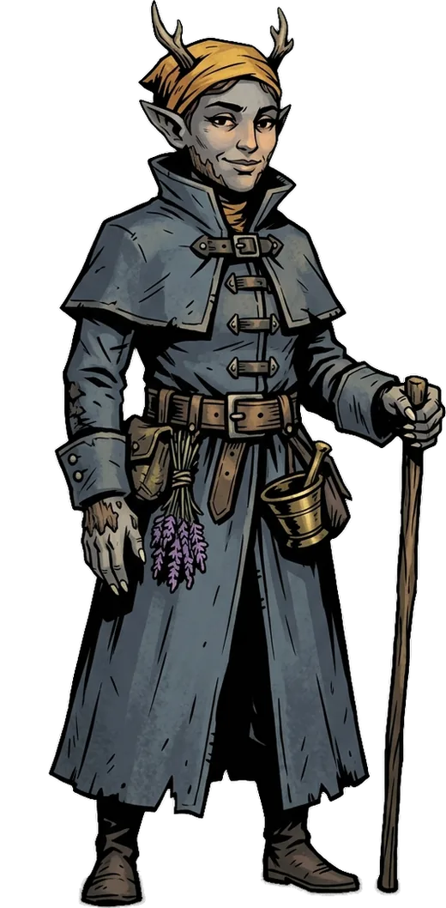
Druido, elfa
Erborista del bazar, prepara i decotti che tengono in piedi la squadra
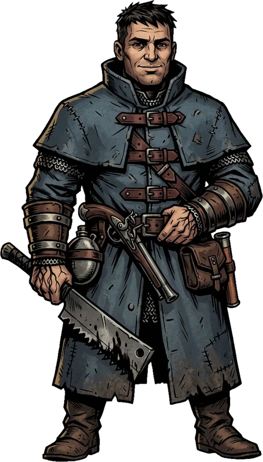
Guerriero, umano
Il più anziano di servizio, quello che firmerà il rapporto a fine missione
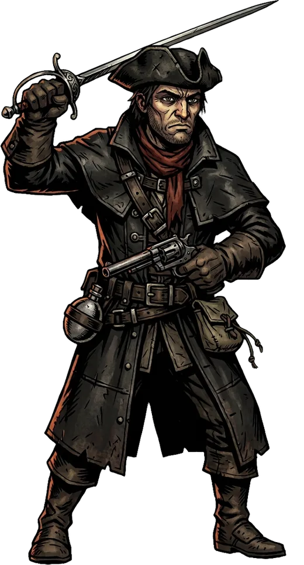
Jaeger, umano
Un Cacciatore novizio, stocco in una mano, pistola nell'altra
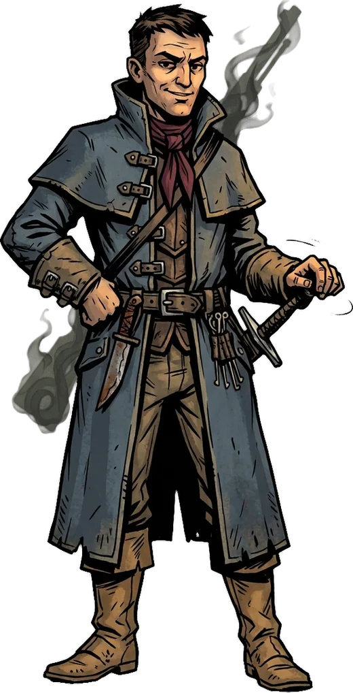
Ladro, umano
Nato nel Distretto Rubino, uscito tre giorni prima che lo segregassero
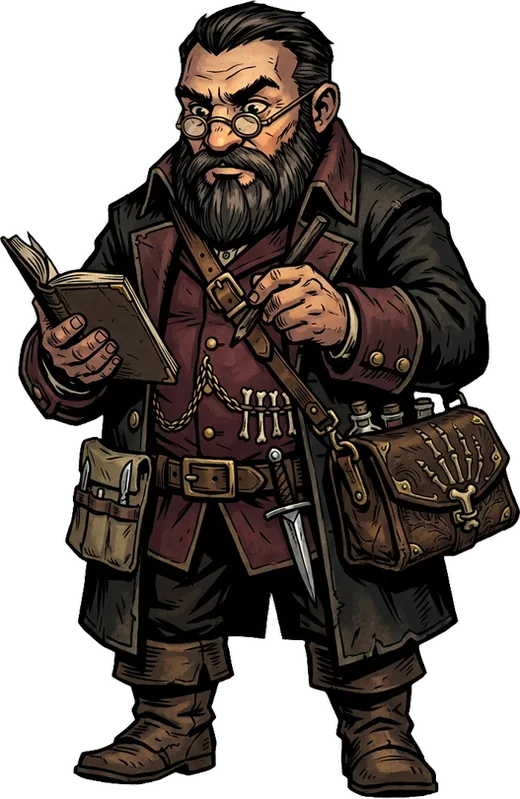
Mago, nano
Medico di quartiere e anatomista. Prende appunti su tutto
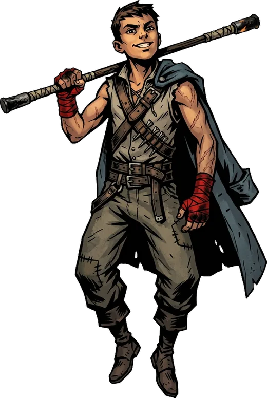
Monaco, umano
Ragazzo di strada cresciuto in una palestra di lottatori. Il più giovane, il più veloce
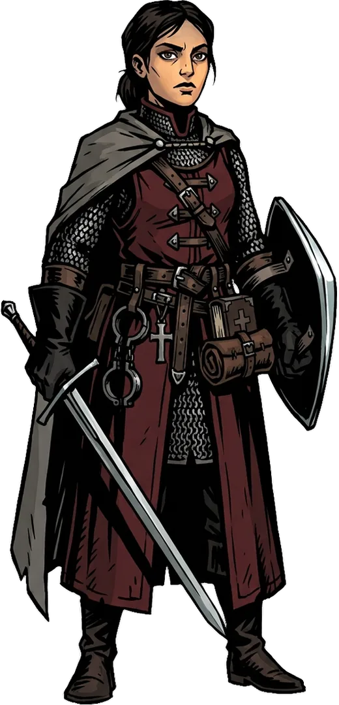
Paladino, umana
Addestrata nella House of Blood. Un baluardo di rettitudine
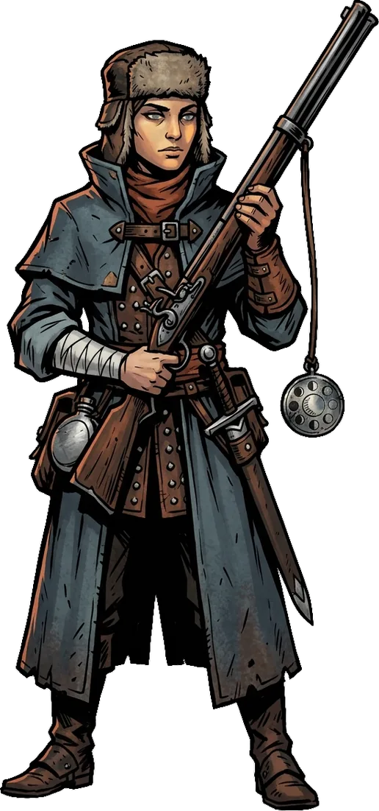
Ranger, umana
Tiratrice scelta. Riesce a rintracciare le bestie della Piaga prima di chiunque altro
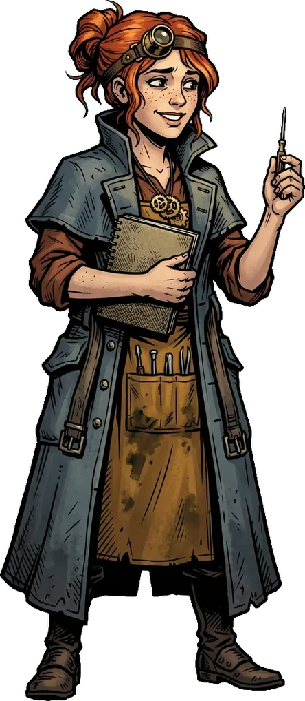
Stregone, umana
Apprendista orologiaia. Sa aggiustare qualsiasi cosa
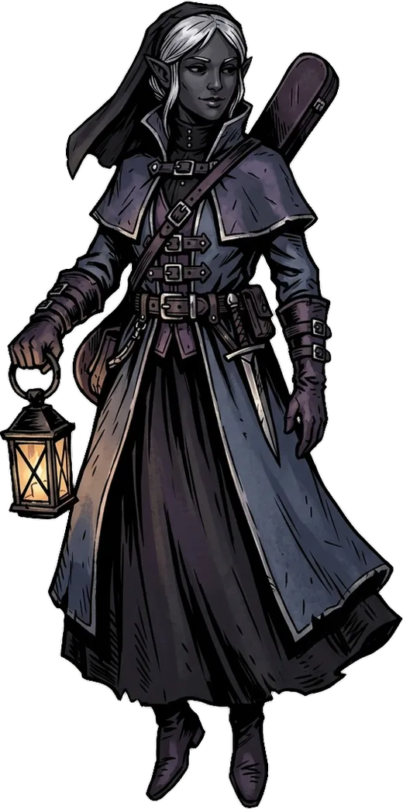
Warlock, elfa
Vedova. Nelle notti peggiori è quella che non ha mai paura
Riceverete la scheda completa prima della serata. Ogni scheda contiene tre cose oltre ai numeri:
Chi siete. In poche righe. Il resto del personaggio è una vostra scelta.
Una domanda di legame. Riguarda un altro membro della pattuglia. Risponderete ad alta voce all'inizio della sessione: pensateci prima, ma decidete al tavolo, quando saprete chi sono i vostri compagni.
Un segreto, in busta chiusa. È vostro: potete rivelarlo quando volete, a chi volete, oppure mai. Non esiste né un modo giusto di usarlo, né un momento perfetto per svelarlo.
Giocheremo con le stesse regole della campagna.
Certe cose che vedrete o sentirete richiederanno un tiro salvezza. Chi fallisce subisce una follia a breve termine: resta stordito per un istante, poi per qualche ora il personaggio si comporta in un modo che non ha scelto, rimanendo sotto il vostro controllo. Fa parte del gioco, e interpretarla è metà del divertimento.
Il riposo breve dura 10 minuti, ma solo i primi due della serata ricaricano le capacità. Il riposo lungo richiede un luogo sicuro, e stanotte non ne avrete uno. Le risorse che avete all'inizio sono quelle con cui arriverete all'alba.
Rumorose, potenti e lente da ricaricare. Chi ne ha una troverà sulla scheda quanti colpi tiene la canna e cosa serve per ricaricarla. Uno sparo si sente a distanza: non passerete inosservati.
Tiriamo davanti a tutti e non correggiamo i risultati. Nel caso in cui un personaggio muoia, continuerete a giocare con un altro personaggio: non resterete mai a guardare per troppo tempo.
La serata tocca questi temi sensibili: contagio e trasformazione del corpo, minacce di linciaggio, allusioni al suicidio, effetti psicologici dovuti al lutto, violenza su civili, bambini in pericolo, sangue e morte.
Se uno di questi argomenti è per voi un limite, o se ce n'è un altro che preferite non incontrare, scrivetemelo in privato prima della serata senza spiegare il perché. Dalle vostre risposte ricaverò cosa resta fuori dal gioco (linee) e cosa accade ma non viene descritto (veli), e ve lo dirò all'inizio della sessione, senza fare nomi. Ci daremo anche un segnale con cui chiunque può fermare una scena in qualsiasi momento, senza dover dare spiegazioni.
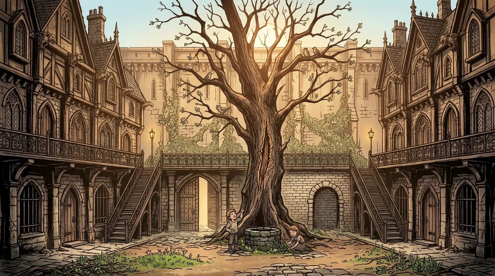
E ricordate il motto della Milizia:
Sopravvivere assieme
o morire assieme.